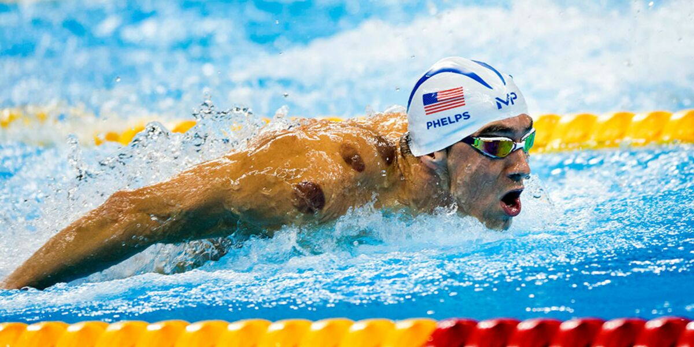

La natation est un sport aquatique qui consiste à se déplacer dans l'eau en utilisant ses bras et ses
jambes pour se propulser.
C'est l'un des sports les plus complets, offrant à la fois des
bienfaits physiques et mentaux

Il est vrai que la natation est une excellente activité pour la santé physique. Elle sollicite l’ensemble du corps, ce qui en fait un sport complet et équilibré. Chaque mouvement engage plusieurs groupes musculaires — bras, jambes, dos, abdominaux — permettant ainsi un renforcement musculaire global sans impact sur les articulations. Grâce à la résistance de l’eau, les muscles travaillent en douceur mais en profondeur, ce qui améliore aussi bien la force que l’endurance. La natation favorise également la souplesse et la mobilité articulaire, tout en contribuant à une meilleure posture et à un bon équilibre corporel. En pratiquant régulièrement, on peut constater une amélioration de la capacité respiratoire, du rythme cardiaque et de la circulation sanguine, ce qui en fait une activité idéale pour entretenir sa forme de manière durable.
En plus de ses bienfaits physiques, la natation a un impact très positif sur le bien-être mental. Elle aide à réduire le stress en libérant des endorphines, souvent appelées “hormones du bonheur”. En nageant régulièrement, on peut constater une amélioration de l’humeur, une diminution de l’anxiété, ainsi qu’un sommeil plus réparateur. La natation favorise aussi la concentration et la relaxation, grâce à la régularité des mouvements et à la respiration contrôlée. Elle permet enfin de renforcer la confiance en soi, en donnant un sentiment de maîtrise et de progression. C’est une activité complète, aussi bénéfique pour le corps que pour l’esprit.